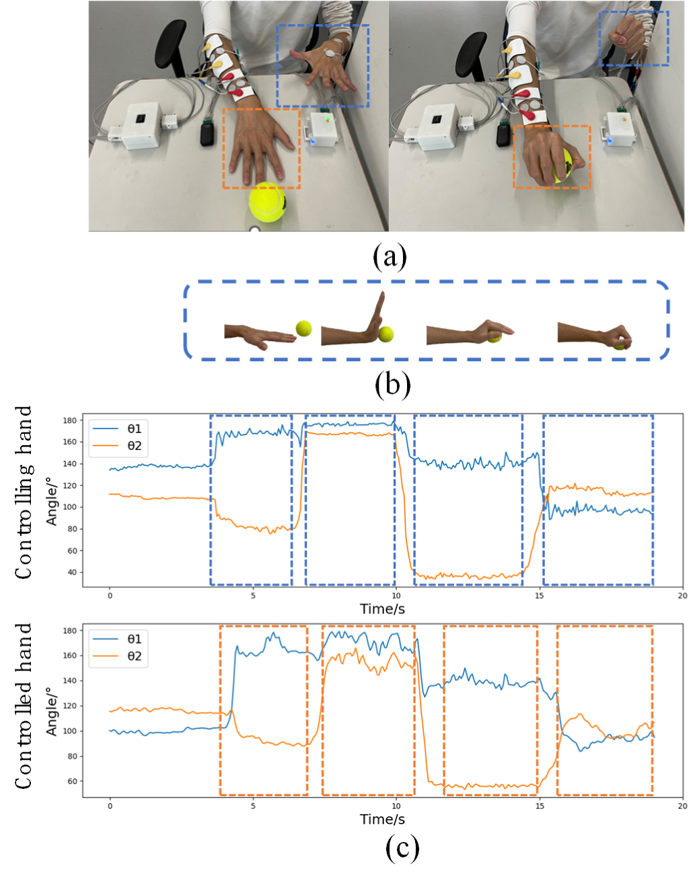

Portable sEMG-Controlled Hand Electrical Stimulation System



Overview
This work presents a portable contralateral controlled functional electrical stimulation (CCFES) system that uses bilateral surface electromyography (sEMG) to support adaptive hand rehabilitation. The system combines sEMG acquisition, real-time gesture recognition, and functional electrical stimulation in a portable closed-loop architecture.
System Architecture
The system contains three modules: an sEMG acquisition module for the affected hand, a gesture-recognition module for the unaffected hand, and an FES module. The modules communicate wirelessly through Bluetooth Low Energy, enabling the healthy hand to express user intent while the affected hand provides muscle-state feedback for adaptive stimulation.
Signal Processing and Gesture Recognition
Four forearm muscles are monitored for hand opening, grasping, wrist extension, and wrist flexion. Signals are filtered, segmented using short-time energy, and represented using mean absolute value features. LDA, KNN, and SVM classifiers are evaluated, with the selected classifier deployed to an edge-computing chip for online recognition.
Adaptive FES Control
Stimulation amplitude is adjusted according to the energy difference between homologous sEMG signals from the unaffected and affected sides, allowing stimulation intensity to respond to the participant’s current muscle activity rather than remaining fixed.
Experimental Evaluation
The study evaluates sEMG signal quality, offline and online gesture classification, adaptive FES amplitude modulation, and an activity-of-daily-living object-taking experiment. The final experiment demonstrates transitions among hand opening, wrist extension, wrist flexion, and grasping based on user intent.